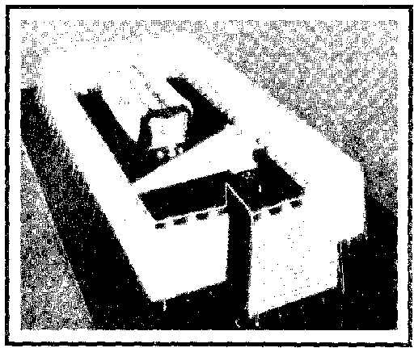

72
- Z —
<lal
78
Zü ! -kameyn
72
Sarajevo Haggadah Tapınağı‘ndan bir resim.
Sandığı Kerubimler kanatları üstünde taşırken gösteriyor.
Sandık arabada taşınırken. Friz. Kopernaum Havzası.
Çadır ioPirıağın ternsilı resnıı.
Fasanestrasse’de Havra Sandığı, Charottenbur, Berlin
l 9 1 2’de tamamlanmış 1 938’de yıkılmıştır.
Ahid Sandığı‘nın Kerubimlerle birlikte tasviri
Taşınabilir Sandık Emanu-EI Tapınağı,San Franciscol
Süleyman Mabedi’nin dış görünümü
Süleyman Mabedi’nin iç görünümü.
Levililer Sandığı Jordan Nehri’nden geçirirken
1 2 . Yüzyıl İspanyol İncili’nden. Leon S. lsıdoro
M.S. 3 Fol. 93V
Bezalel ve Oholia Çadır Mabedi inşaa ederken
ahşap baskı Kopergel İncili’nden.
Nurenberg 1 483 Kudüs İsrail Müzesi Arşivleri.
Fresk.Dura Europos Havrası‘nda Filistinlilerin ele geçirdikleri
sandıkla geri döndüklerini gösteriyor.
E ben· Ezer
.
Aphek
•
S h i l o h
K ıriath -Jearını
� / �
E�’
-
Ashdod
fi)
• J erusalenı
Ahid Sandığı‘nın takibettiği yol. Shiloh’tan getiridikten sonra,
Eben-Ezer’ de Filistinl!it’Y tarafından ele geçirilip geri getirilişini
gösteren harita.
Kutsal Kaya’nın yandan ve epeden krokisi
·
Süleyman Mabedi’nin planı
1 4. Yüzyıl Ahid Sandığı Prag, Altneushul. Bu yapı Avrupa’daki
en eski sinegoglardan biridir. Fotoğraf; Prag Devlet Yahudi Müzesi.

Nebukadnezar’ın Ordusu Tapınak’a hücum ederken.
Jean Fouguet’in minyatürü. Fransa 1 5 . Yüzyıl Paris.
Tapınak modeli
1 5. Yüzyıl
Rothschild Mecmuası‘ndan
detay. Kapalı Ahid Sandığı .
Kudüs, İsrail Müzesi.
M.S. 1 80/5 1 , Fol. l 05 B
R<:)zalel Tanrı‘rıın
E;iinderı esınlenerek
Kerubirn rıeykelini
vapıyor. Sol tarofta
Muso On Emir levhalarını
isra!! Chrnleston
SoncJığın
kcı tx:.ı ri rno.
Mi:torı Horn
tararındm; yapılmıştır.

internetten sipariş için
www.kitapalemi.com